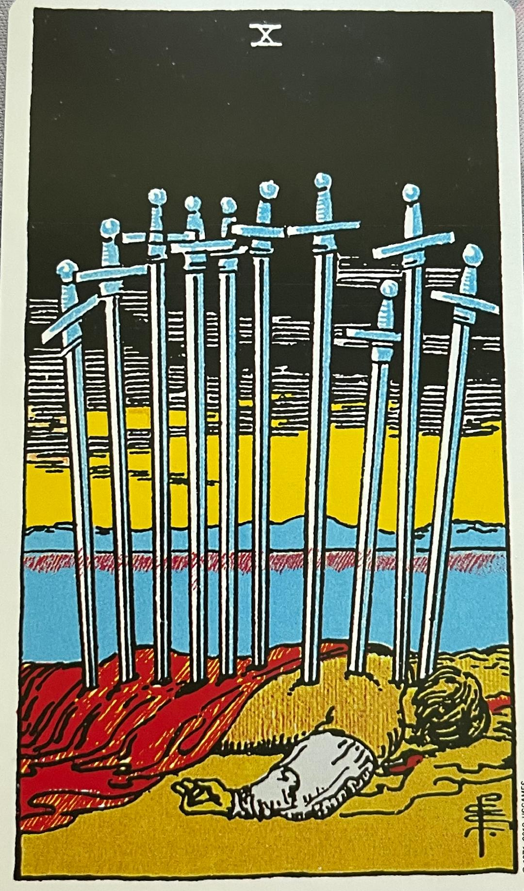

Since today is day 1 of my tarot journey, I used my pendulum to pick the card to look at. I shuffled my deck using The Rider Tarot Deck and placed 3 cards face down. I had my pendulum over each card asking if this was the card to use. It did not like my first 3 cards, I put 3 more cards down and it finally chose the card to use, the Eight of Cups.
The Eight of Cups is an interesting card. It's all about abandonment. Being able to walk away from a bad situation. Abandoning a situation could be good and bad.
First abandoning a situation can bring relief and happiness. It could make you feel happy you are leaving the situation. However, it can also be exhausting to make such a difficult decision. Or a person could feel disappointed or lonely that they are leaving the situation regardless of what the situation is.
If you look at the card the person is walking away from all their troubles or cups. just leaving them on the beach.
The Eight of Cups could also mean just travel, you are temporarily leaving or abandoning. This does not have to be a permanent decision. A person
could be going on an adventure of a lifetime.
The Eight of Cups for me is a very personal pick. I have been working on feelings of abandonment by a parent since I was a child. This is something,
as an adult, been struggling to not feel this way anymore. This has been weighing down on me and I have to let it go.
How I am reading this card is my feelings of abandonment need to be left in those cups. All my sadness and disappointments can stay in those cups.
I need to mentally walk away from those feelings and find happiness in what I have now. I need to learn it is okay to think about what I left in those cups,
but I cannot let those feelings hold me back or continue making me feel bad. I need to work on growing from my past, not letting it impact my future.
Reading for September 30, 2022
Ten of Swords

For day 2 of my journey I decided to not use the pendulum when picking my card of the day. I kept shuffling until I felt a peace wash over me. I know
then this was the right card for today.
The Ten of Swords has several meanings. The first one is loss, crisis, or feelings of being overwhelmed. When we look at the card, we see a man with 10 swords sticking out of his back.
With that many swords, we can say the man is deceased. With that many swords, it can also be looked at as a burden, however, if you continue to look at the card further, you can see the sun rising. This shows hope.
One way to look at this card could be as a crisis or even as a betrayal. Someone could have a had a major loss in their life. If someone is going through a difficult time, there is light at the end.
There could be an enemy out there ready to stab a person in the back. This card could also be read as an ending and a beginning. Maybe it is a new job, one is ending, and one is beginning. The ending or beginning of a relationship.
The Ten of Swords is important right now in my life because I am afraid, I am being burned out at work, even overwhelmed. I see hope on the horizon. I have been taking front end software development classes to change
careers or fields. Today this card represents acknowledgement I am feeling overwhelmed in my current career and hope of a brighter future.